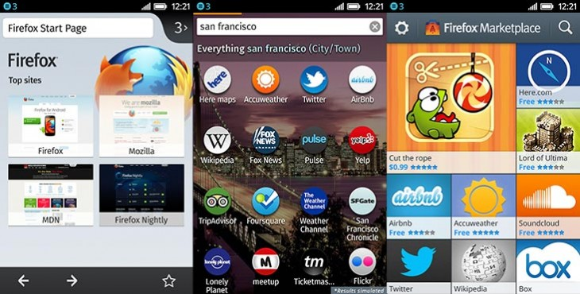

你是熱血的 Firefox OS 開發者，而且早已設計了許多 App 準備大展身手嗎？在完成自己的 App 作品之後，當然要進行某些測試並解決各種疑難雜症了。先來這裡看看有哪些方法可協助自己順利完成測試並排解疑難，讓自己的開發作業更順利。
本文將說明 App 測試與疑難排解時的注意事項。

設定自己的測試環境
開發者可安裝多種工具，針對 Firefox OS/Open Web App 執行真正有效的測試。我們建議至少安裝下列工具：
- Firefox 行動版，即 Firefox for Android。同樣建議使用如 Aurora 或 Nightly 的預先發行版進行相關測試。如果開發者手上沒有實體的 Android 裝置，亦可使用 Android emulator。
- Firefox OS 應用程式管理員 (App Manager)。此工具已內建於桌面版 Firefox 26 或更高版本中，提供多項有用工具 (如 App 除錯)，並可將 App 安裝至模擬器與實體裝置上。
- Firefox OS 模擬器 (Firefox OS Simulator)。如果開發者特別想在舊版 Firefox OS 上測試 App，即可使用此模擬器。針對 1.2 或更高版本，請使用「應用程式管理員 (App Manager)」。另可透過模擬器的控制面板，將 App 安裝至模擬器之中。
最理想的情況，當然是能用實際裝置測試自己的 App。可參閱開發者手機指南。
測試
雖然 Open Web App 與網頁，均使用相同的技術和發佈方式，但因為 App 環境並不具備如 Chrome 瀏覽器的網址列或返回按鈕；且 Firefox OS 裝置也不像 Android 有實體的退回按鈕，所以使用者經驗是截然不同。以下步驟可讓開發者確保 App 達到絕佳的使用者經驗。
- 安裝 App。確認 App 的圖示出現在主畫面上，且 App 的名稱完整未遭截斷。
- 啟動 App。確認能正確偵測、顯示螢幕尺寸與方向。
- 確認消費者可馬上看到你的 App，而不是看到你的首頁。請記住，若消費者是從 Firefox Marketplace 上安裝你的 App，也就是購買了 App 的功能。不需再次傳送 App 功能的登錄頁面給消費者才對。理想的 App 應該讓消費者能第一眼就看到「Getting Started」或「Login」頁面。
- 從頭到尾執行過 App 的主要功能。特別注意瀏覽作業的最末端，還有內容縮放時的問題。
- 確認內容連結將導向 App 之外 (如連至其他網頁或 Twitter)。若要開啟新的視窗或框架，也要讓消費者能順利返回你的 App。
- 在桌面版瀏覽器中，可使用適應性設計 (Responsive Design) 檢視模式檢查 App 在不同螢幕尺寸中的情況。建議檢查 320×480 ~ 1260×800 的解析度。
疑難排解
- 如果需要 App 開發方面的協助，則可參閱應用程式中心上的豐富資訊，其中囊括了設計與開發技術、App 安裝作業、已支援的 API，還有更多。
- Firefox OS 專區提供 Firefox OS 平台的豐富資訊，包含 Firefox OS 的建構、開發其內預設的 App 等。
- 若要了解提交作業，可參閱下個章節。
- Marketplace 常見問題，將針對 Firefox Marketplace 上的多樣 App 發佈問題，提供相關答案。
- 若有特殊問題需要解答，另可前往許多相關討論區，包含新聞群組、郵件群組、IRC 聊天室等等。另可參閱應用程式中心、Firefox OS 專區、Marketplace 專區等頁面，找到最高度相關的區塊！
Mozilla 開發者社群網站 (MDN) 原文連結：App testing and troubleshooting
你也可參閱中文版《App 測試與疑難排解》；並參閱 MDN 的更多 Firefox OS 或 Marketplace 相關文章。